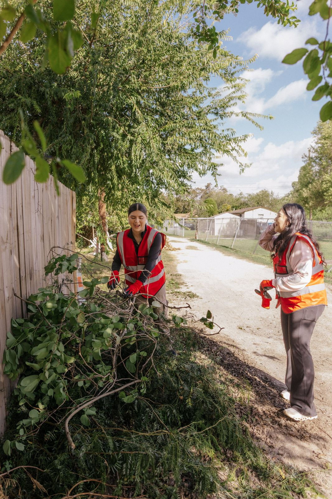
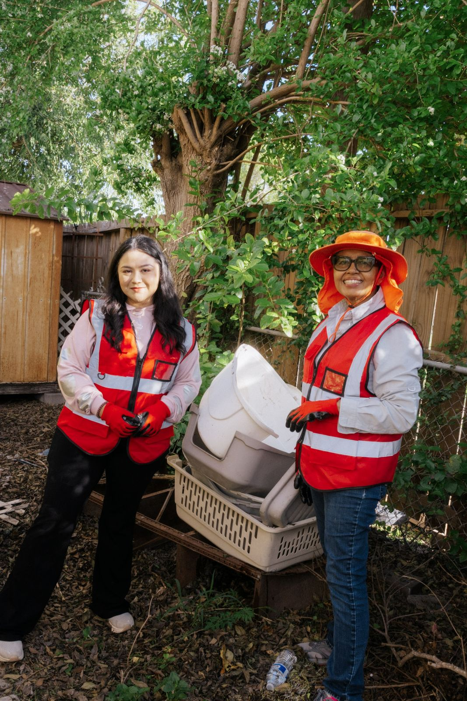
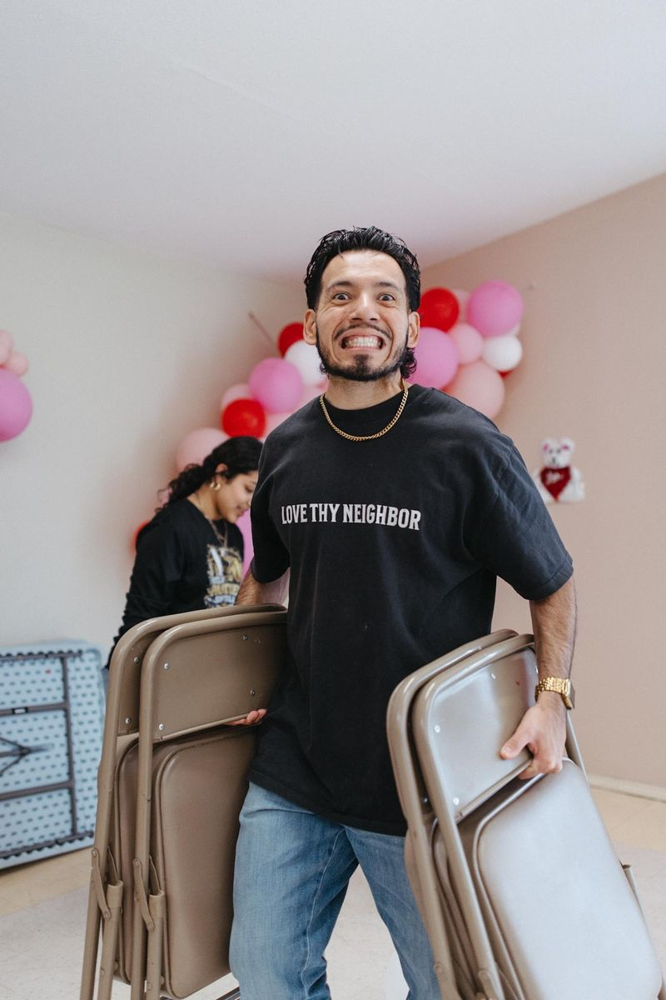

Programs
Four ways we show up for our senior neighbors.
A safer home, a steady friend, a place to belong, and a booth that pays for it.

Phase 1 is open
R3: Restore, Renew & Rebuild
When a yard gets ahead of a senior, it becomes a hazard. Snakes and pests move in. Paths get blocked. The city sends notices.
On a Restore Day, a volunteer crew comes to the home and does the heavy work.
- Clearing overgrown yards
- Trimming trees
- Hauling away junk
- Removing hazards around the outside of the home
What R3 does not do yet. We do not do roof, structural, interior or mold repairs, and we are not a regular mowing service. R3 serves homes in Harlingen only for now.
Funded in part by the City of Harlingen through the Community Development Block Grant program.





Open
Adopt-A-Neighbor
Many of our senior neighbors live alone. A clean yard helps. A friend helps more.
Each volunteer is matched with one senior neighbor and keeps in touch every month.
- A phone call or a letter
- A coffee visit
- A small care package
We make the match, check in with both of you, and help if a bigger need comes up.

Once a month
Hearts & Hands Fellowship
Once a month, volunteers bring crafts, music and conversation to adult day centers, nursing homes and hospice centers.
The goal is simple. Our elders are seen, known and never forgotten.
- Volunteers age 13 and up are welcome
- Families and youth groups can serve together
- We bring the supplies
At local markets
GoodWorks Market
GoodWorks Market is our resale booth. Neighbors donate good items. Volunteers sort them and run the booth at local markets.
Every purchase pays for tools, supplies and gas for the other three programs.
- Shop the booth
- Donate items in good condition
- Help sort, set up and sell
Ready to pick a date?
See what is coming up and where a crew needs you.